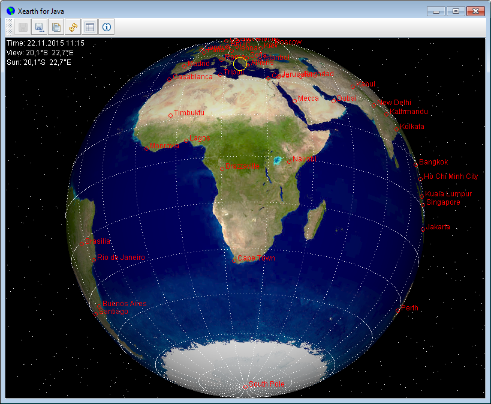
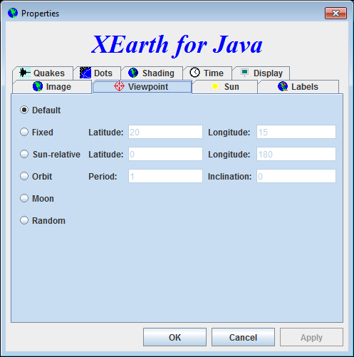

Welcome to XEarth for Java
XEarth renders a shaded image of the earth, as seen from your favorite vantage point in space. By default, the image is updated every five minutes according to the current position of the sun.
Configuration
The image is highly configurable.
Acknowledgements
- xearth for Windows by Greg Hewgill (@ghewgill)
- xearth for Unix by Kirk Lauritz Johnson
- Visible Earth, Blue Marble by NASA
- Astronomische Algorithmen by Jean Meeus
- Earthquakes Real-time Feeds by USGS